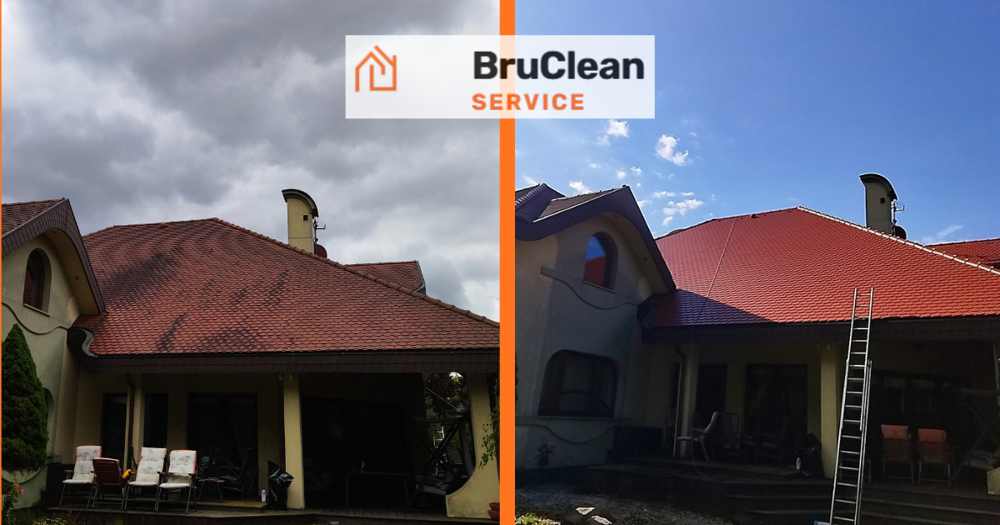
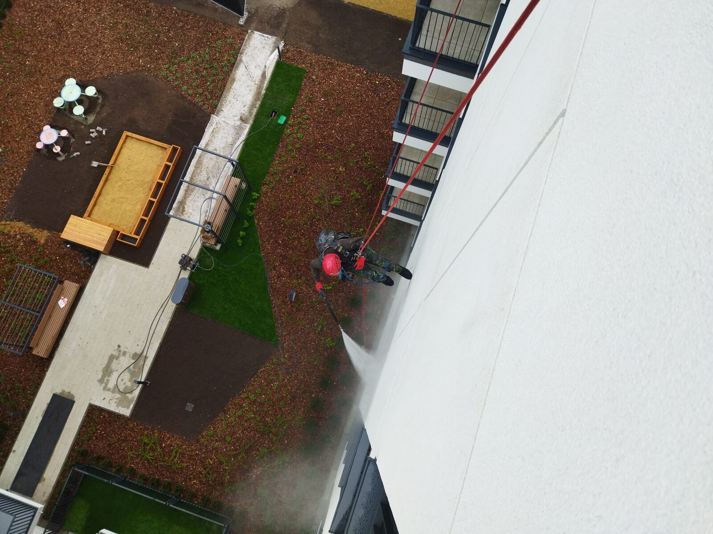
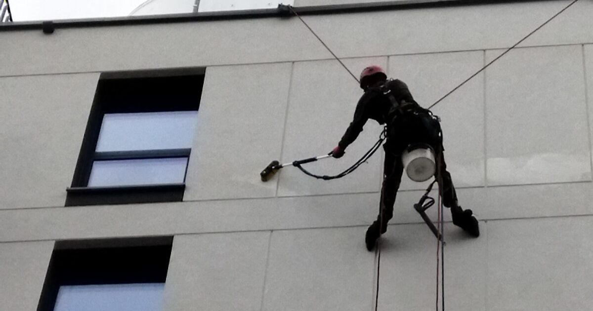
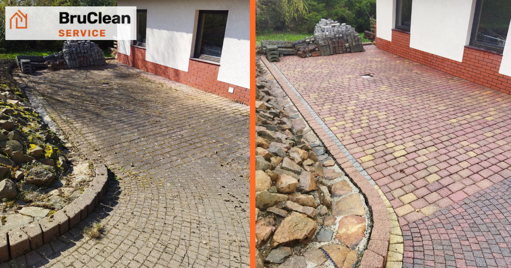
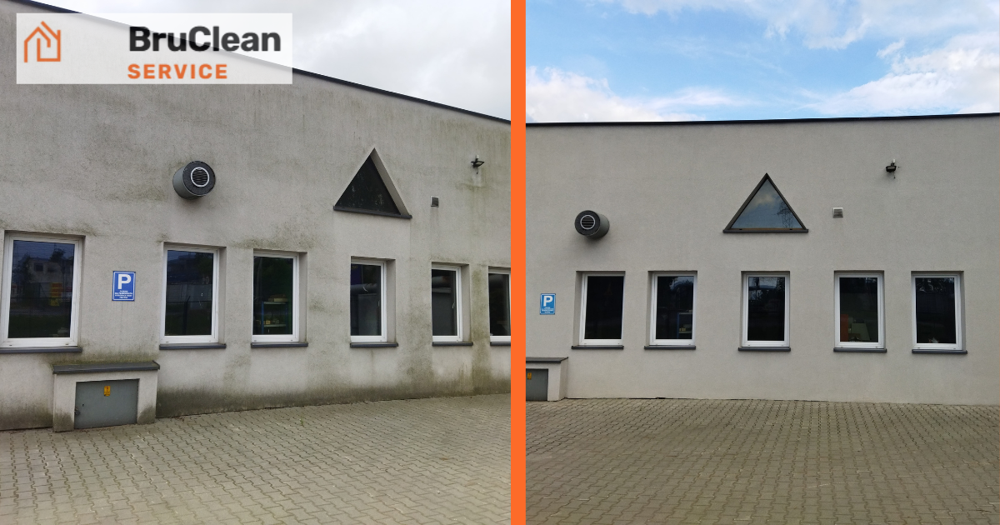

Poradnik BruClean Service
Praktyczna wiedza o czyszczeniu, renowacji i pracach wysokościowych — od ekipy, która na co dzień pracuje na dachach, elewacjach i kostce brukowej w Krakowie i Małopolsce.

Mycie dachu z mchu — czy to działa i na jak długo?
Sprawdź, jak przebiega mycie dachu z mchu i porostów oraz jak długo utrzymuje się efekt po zabiegu.
Czytaj dalej
Prace wysokościowe bez rusztowań — kiedy się to opłaca?
Sprawdź, czym różni się alpinizm przemysłowy od rusztowania i kiedy warto wybrać pracę na linach.
Czytaj dalej
Czyszczenie rynien jesienią — dlaczego to najważniejszy termin w roku
Sprawdź, co grozi rynnom i elewacji, gdy nie oczyścisz ich przed zimą, i jak często warto to robić.
Czytaj dalej
Ile kosztuje mycie elewacji budynku? Co wpływa na cenę
Sprawdź, co realnie kształtuje wycenę mycia elewacji i dlaczego nie da się podać jednego cennika online.
Czytaj dalej
Jak często myć elewację budynku? Praktyczny przewodnik
Sprawdź, co wpływa na częstotliwość mycia elewacji, jak rozpoznać moment na czyszczenie i dlaczego warto zadbać o to raz w roku.
Czytaj dalej
Piaskowanie czy mycie ciśnieniowe kostki brukowej — co wybrać?
Sprawdź, czym różnią się obie metody, kiedy wystarczy mycie ciśnieniowe, a kiedy warto zdecydować się na piaskowanie i impregnację.
Czytaj dalej
Mycie elewacji Kraków — pełny poradnik przed decyzją
Sprawdź, ile kosztuje mycie elewacji, czy warto robić to samemu i co realnie zyskujesz na czystej ścianie.
Czytaj dalej
Mycie dachów Kraków — kiedy warto zlecić fachowcom?
Sprawdź, ile kosztuje mycie dachu, czy warto robić to samemu i jak długo utrzymuje się efekt.
Czytaj dalej
Impregnacja kostki brukowej — czy warto i na co pozwala?
Sprawdź, co realnie zyskujesz na impregnacji kostki i dlaczego efekt zależy od jakości wykonania.
Czytaj dalej
Czyszczenie hal przemysłowych — kiedy warto to zlecić?
Sprawdź, co realnie daje firmie profesjonalne czyszczenie hali i dlaczego to zadanie dla specjalistów.
Czytaj dalej
Mycie okien na wysokości Kraków — jak to działa i kiedy warto
Sprawdź, kiedy potrzebne jest mycie okien metodą alpinistyczną, czy to bezpieczne i ile to kosztuje.
Czytaj dalej